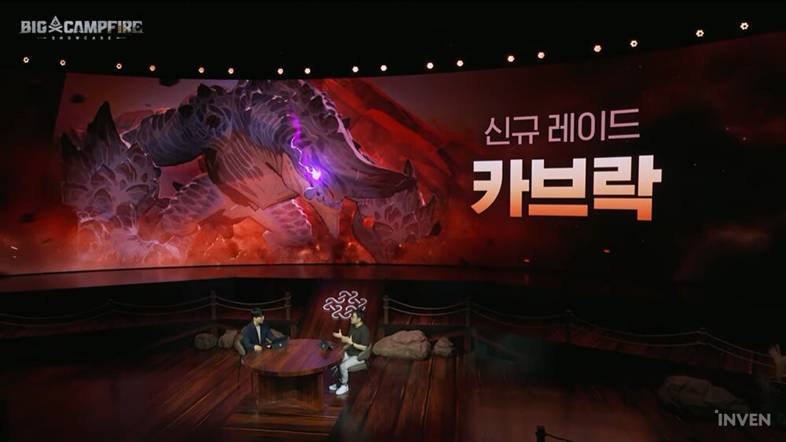
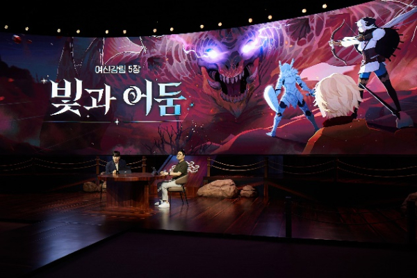

마비노기 모바일 카브락 레이드 입문 체크리스트
이번엔 마비노기 모바일에 곧 열리는 새 레이드 소식부터 짚고 갈게요. 시즌2 '빛과 어둠'의 다음 레이드 카브락이 7월 16일에 추가되는데요, 아직 오픈 전이라 확정된 정보가 많지는 않지만 지금까지 공개된 것만 모아서 입문 난이도로 처음 도전하실 분들이 미리 뭘 봐두면 좋을지 체크리스트로 정리해 볼게요.
🕒 마지막 업데이트 2026.07.13 · 인벤 기사·공식 쇼케이스 예고 기준
먼저 확실한 것부터요. 카브락은 모래와 대지의 힘을 다루는 용이고, 6월 25일 막을 내린 글라스기브넨이 끝난 자리에 새로 추가되는 레이드예요. 구체적인 보스 패턴이나 입장 조건 같은 세부 사항은 게임 안에서도 아직 확인할 수 없는 상태고요, 그래서 이번 글은 "이렇게 하면 깬다" 식의 실전 패턴 공략이 아니라 공개된 사실만으로 미리 봐둘 만한 것을 정리하는 대비 체크리스트라는 점을 먼저 말씀드릴게요.

쇼케이스 무대에 처음 공개된 카브락의 모습이에요
이미지: 넥슨 마비노기 모바일 빅 캠프파이어 쇼케이스(인벤 기사 게재분)
🐉 카브락이란카브락, 어떤 레이드인지부터 짚어볼게요
카브락은 시즌2 '빛과 어둠'에서 예고된 신규 레이드로, 7월 16일 추가돼요. 넥슨이 쇼케이스에서 공개한 내용을 보면 전 지역을 휩쓰는 브레스 공격과 석화 기믹 등 독특한 전투 패턴을 구사한다고 하는데, 정확히 어떤 타이밍에 어떻게 발동하는지 같은 세부 수치는 아직 나온 게 없어요. 난이도는 입문 난이도부터 시작하고요, 어비스와 동일하게 혼자하기(솔로 플레이)도 지원된다는 점이 공식으로 확인됐어요.
레이드 위치로 보면 카브락은 글라스기브넨이 막을 내린 자리에 새로 추가되는 레이드예요. 참고로 비슷한 시기에 타바르타스 레이드가 7월 20일 종료될 예정인데, 이건 카브락과는 완전히 별개 레이드라 혼동하지 않으셔도 돼요.
카브락이 등장하는 시즌2 '빛과 어둠'은 만렙이 85에서 100으로, 룬 강화 한계가 8성에서 10성으로 늘어난 성장 확장이 핵심인 대형 업데이트예요. 7월 들어서는 룬다 어비스(7/2)에 이어 카브락(7/16)까지 신규 콘텐츠가 순서대로 열리는 흐름이라, 카브락도 그 연장선에 있는 콘텐츠로 보시면 돼요.
시즌2가 들고 온 게 카브락 하나만은 아니에요. 만렙·룬 강화 확장과 함께 필드보스 앙그르바한이 나오는 신규 지역 '창백한 산', 룬다·피오드 던전, 시즌 전용 스킬 '밤의 흔적', 서버 단위로 진행되는 신규 콘텐츠 '소울스트림' 같은 것들이 같은 시즌 안에 함께 추가됐어요. 카브락 바로 앞에 열린 룬다 어비스(7/2)는 보스 칼드레드·데스펠·테로사가 순차로 등장하는 콘텐츠고, 이것도 카브락처럼 혼자하기가 지원돼요. 카브락을 준비하시는 김에 이런 시즌2 콘텐츠들도 한 번씩 훑어보시면 전체 흐름이 잡힐 거예요.
이름이 비슷비슷해서 헷갈리기 쉬운데, 구분하자면 글라스기브넨(6/25 종료)이 끝난 자리에 카브락(7/16 오픈)이 새로 열리는 순서고, 타바르타스(7/20 종료)는 시기만 겹치는 별개 레이드예요.
석화·광역 브레스, 이런 것부터 봐두면 든든해요
아직 정확한 패턴은 안 나왔지만, 공개된 기믹 힌트만으로도 미리 봐둘 만한 부분은 있어요. 다만 실제로 어떻게 구현될지는 오픈 전까지 확정된 게 아니라서, 아래는 어디까지나 일반적인 대비 방향으로만 봐주시면 좋겠어요.

카브락은 시즌2 '빛과 어둠'의 새 레이드로 예고됐어요
이미지: 넥슨 마비노기 모바일 빅 캠프파이어 쇼케이스(팍스경제TV 기사 게재분)
- 석화 대비 — 석화 기믹이 언급된 만큼, 석화 저항이나 해제 수단이 있는 세팅인지 미리 점검해두세요.
- 광역 브레스 대비 — 전 지역을 휩쓰는 브레스라니, 생존기나 회복 수단이 넉넉한 조합인지 다시 봐두면 든든해요.
- 솔플 스펙 점검 — 혼자하기가 지원된다고 하니, 파티 없이 도전하실 분들은 지금 전투력·룬 세팅으로 솔로 진행이 가능한 수준인지 가늠해보세요.
- 단계적 도전 계획 — 입문 난이도부터 시작한다고 하니, 처음부터 무리해서 위 난이도를 노리기보다는 입문부터 순서대로 올라가는 계획을 세워두는 편이 안전해요.
저는 일단 석화 해제 아이템부터 슬롯에 넣어두려고요. 있는지 몰라서 못 쓰는 것보다는, 미리 봐두는 쪽이 마음이 편하더라고요.
여기까지는 아직 공개되지 않았어요
다른 레이드들은 보통 이런 조건으로 열렸어요
카브락 자체의 입장 조건은 아직 공지되지 않았지만, 참고할 만한 확정 정보는 있어요. 나무위키 레이드 문서를 보면 마비노기 모바일의 레이드 콘텐츠 전체는 캐릭터 레벨 65를 달성한 뒤, 퀘스트 '깊은 어둠 그 너머로'를 클리어하고, 이어서 퀘스트 '저 바다를 향하여'(요구 전투력 약 19,054)까지 클리어하면 최초 1회 해금되는 구조예요. 레이드마다 매번 새로 걸리는 게이트가 아니라 '레이드 콘텐츠 전체'를 한 번 여는 개념이에요. 다만 이건 마비노기 모바일 레이드 시스템 전반에 공식 확인된 해금 구조고, 카브락 자체에 별도 조건이 추가로 걸리는지는 오픈 당일 확인이 필요해요. 정확한 기준은 공식 공지가 나와야 확실해질 것 같아요.
보상을 받는 방식도 미리 짚어볼 만해요. 넥슨 공식 가이드를 보면 마비노기 모바일 레이드 보상은 ①클리어 보상 ②재화 교환 ③반복 보상 세 갈래로 나뉘어요. ①클리어 보상은 레이드를 주간 첫 클리어했을 때 받는 보상이고, ②재화 교환은 레이드에서 얻은 재화를 상점 같은 곳에서 원하는 보상으로 바꿔 가져가는 방식, ③반복 보상은 같은 레이드를 여러 번 반복 플레이해도 매번 받을 수 있는 보상이에요. 그리고 클리어 전리품은 매주 월요일 오전 6시에 초기화된다는 게 공식 문구 그대로예요. 카브락의 정확한 보상 내역 자체는 아직 안 나왔지만, 받는 틀은 이 세 갈래에서 크게 벗어나지 않을 거예요.
정리하면, 이미 다른 레이드를 진행 중이시라면 이 해금 조건은 진작에 넘으신 상태일 가능성이 커요. 카브락만의 별도 조건이 붙는지는 오픈 당일 게임 안에서 확인하시는 게 제일 정확해요.
D-3, 오픈 전에 뭐부터 해두면 될까요
오늘(7/13) 기준으로 오픈까지 사흘 남았어요. 남은 기간 순서를 정해보면 이런 흐름이에요.
- 석화 저항·해제 수단이 있는 세팅인지 확인해두기
- 생존기·회복 수단이 충분한 조합인지 다시 챙겨보기
- 혼자 도전할 계획이라면 지금 스펙으로 솔로 진행이 가능한지 가늠해보기
- 입문 난이도부터 순서대로 올라간다는 마음으로 계획 세워두기
- 정확한 패턴·조건은 7월 16일 오픈 당일 게임 내에서 살펴보기
지금 시점에서 확실하게 말씀드릴 수 있는 건 여기까지예요. 세부 패턴이나 정확한 요구 스펙은 오픈 당일 나오는 대로 이 글에 다시 채워둘게요.
💬 자주 묻는 질문카브락, 이런 게 궁금해요
Q카브락 레이드는 언제 열리나요?
7월 16일에 추가될 예정이에요. 이 글을 쓰는 오늘(7/13)은 아직 오픈 전이에요.
Q카브락도 혼자서 할 수 있나요?
네, 어비스와 동일하게 혼자하기(솔로 플레이)가 지원된다고 공식으로 확인됐어요.
Q처음부터 어려운 난이도인가요?
아니요, 입문 난이도부터 시작해요. 낮은 난이도부터 순서대로 열리는 구조로 보여요.
Q구체적인 보스 패턴은 어떻게 되나요?
전 지역 브레스와 석화 기믹이라는 큰 틀만 알려져 있어요. 발동 타이밍이나 지속 시간 같은 세부 수치는 오픈 후에 나올 거예요.
Q카브락 다음에도 새 레이드가 또 나오나요?
시즌2가 룬다 어비스(7/2)·카브락(7/16) 순으로 콘텐츠를 순차 공개해온 흐름을 보면 앞으로도 이어질 가능성이 있어요.
석화·브레스 같은 큰 기믹 방향은 먼저 나온 만큼 세팅 한 번쯤 살펴두시는 것도 좋아요. 7월 16일, 저희도 입문 난이도부터 하나씩 도전해볼 생각이에요.